Comparación de cumplimiento
Análisis individual
Cumplimiento Google Workspace:
En el caso de cada proveedor, vemos que cumple parcialmente en cuando al apartado proveedor, seguido por lo funcional, económico y lo técnico. En cuanto a lo que conocemos de Google Workspace, el cliente utilizará Google Sheets en lugar del Excel de escritorio como una migración a la nube. El cliente cuenta ya con carpetas en Google Drive, por lo que la migración a este sistema podría ser factible. Este proyecto se caracteriza por la migración a carpetas en la nube y de dejar de utilizar planillas de escritorio. Estas planillas, las que actualmente utilizan, carecen de fórmulas, por lo que cualquier mejora (fórmulas, tablas dinámicas, etc) es una mejora considerable para esta parte del proyecto.
Se exponen los dos partners que se consultaron (en este caso, esta información es simulada debido a la falta de respuesta o a la negativa de los mismos)
A. SPEK (Partner de Google Workspace)
- Puntaje Global Obtenido: 80.27%
- Desglose por Área:
- Proveedor (25% global): 19.08% — A la altura de las expectativas. SPEK cuenta con sólida trayectoria como Google Premier Partner en Argentina, referencias comerciales corporativas, cumplimiento de NDA (100%) y soporte local en español con SLA estructurado.
- Funcional (30% global): 21.45% — Cumple expectativas globales. Cumple excelentemente en gestión documental en la nube (Google Drive corporativo, coautoría, carpetas compartidas con permisos), pero cae en los ítems comerciales al no contar de forma nativa con una bandeja omnicanal unificada (WhatsApp/Instagram) ni módulos de control de inventario/stock; pero pueden dejarse armadas planillas con fórmulas.
- Técnico (40% global): 36.20% — A la altura de las expectativas. Excelente desempeño gracias a la infraestructura Cloud SaaS de Google, compatibilidad multi-dispositivo BYOD, autenticación obligatoria de doble factor (2FA) y seguridad de datos con cifrado AES-256.
- Económico (5% global): 3.54% — A la altura de las expectativas. Modelo de suscripción predecible por usuario/mes adaptado a facturación local en ARS, aunque condicionado por ser una plataforma de pago comercial.
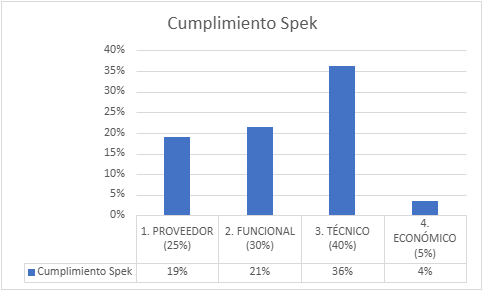
B. Lineout (Partner de Google Workspace)
- Puntaje Global Obtenido: 77.32%
- Desglose por Área:
- Proveedor (25% global): 17.84% — Por debajo de las expectativas parciales. Si bien es un partner certificado de Google Workspace en el mercado local, su estructura consultora y trayectoria presentan un menor alcance institucional y menor disponibilidad de referencias comerciales específicas en comparación con SPEK.
- Funcional (30% global): 21.11% — Por debajo de las expectativas parciales. Presenta las mismas limitaciones funcionales nativas de Google Workspace (ausencia de omnicanalidad comercial y de trazabilidad de stock, que solo pueden ajustarse por fórmulas), sumado a entregables administrativos de migración ligeramente más simplificados.
- Técnico (40% global): 35.08% — A la altura de las expectativas. Hereda todas las fortalezas técnicas de la infraestructura global de Google Cloud (SaaS, 2FA, cifrado), con una leve menor puntuación en gestión avanzada de dispositivos móviles corporativos (MDM).
- Económico (5% global): 3.29% — A la altura de las expectativas. Propuesta económica predecible, aunque con variaciones en los costos de implementación y soporte por hora adicional facturada frente a SPEK.
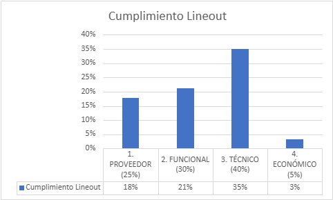
Cumplimiento de Microsoft 365:
Si bien la entidad cuenta con Microsoft office 16 instalados en sus dispositivos (al menos uno de ellos lo tiene), la familiaridad con la herramienta tiene un punto adicional. En el caso de la carpeta compartida, deberían generar usuario y una carpeta y migrar todo lo que ya tienen con una cuenta, inicial gratuita que posee una mayor limitación a lo que tienen actualmente. El único aspecto ya conocido son los menúes.
C. Innovate Consultores (Partner de Microsoft 365)
- Puntaje Global Obtenido: 80.60%
- Desglose por Área:
- Proveedor (25% global): 19.41% — A la altura de las expectativas. Destaca como Microsoft Solutions Partner con más de 15 años de trayectoria institucional en el mercado argentino, proveyendo equipos de soporte técnico dedicados y alta estabilidad operativa.
- Funcional (30% global): 21.45% — Por debajo de las expectativas parciales. Microsoft 365 (OneDrive/SharePoint/Outlook) resuelve de forma óptima la colaboración documental y planillas de cálculo simultáneas, pero carece nativamente de una bandeja comercial omnicanal para WhatsApp/redes sociales y de un módulo ERP de inventario.
- Técnico (40% global): 36.20% — A la altura de las expectativas. Muy sólido en seguridad gracias a la integración con Microsoft Entra ID (Azure AD), políticas estrictas de contraseñas, MFA obligatorio y cifrado corporativo.
- Económico (5% global): 3.54% — A la altura de las expectativas. Costos estructurados de licenciamiento por usuario bajo esquema de partner corporativo.
D. TUX Soluciones (Partner de Microsoft 365)
- Puntaje Global Obtenido: 79.83%
- Desglose por Área:
- Proveedor (25% global): 18.64% — Por debajo de las expectativas parciales. Es un partner enfocado fuertemente en infraestructura IT general y redes, con menor especialización vertical en procesos comerciales de PyMEs textiles en comparación con Innovate Consultores.
- Funcional (30% global): 21.45% — Por debajo de las expectativas parciales. Comparte las mismas limitaciones funcionales de la suite Microsoft 365 en cuanto a la necesidad de incorporar herramientas de terceros para gestión omnicanal y control de stock.
- Técnico (40% global): 36.20% — A la altura de las expectativas. Cuenta con excelente respaldo técnico heredado de los servicios cloud de Microsoft Azure y herramientas de gestión de terminales.
- Económico (5% global): 3.54% — A la altura de las expectativas. Presupuestos claros y escalables por licenciamiento.
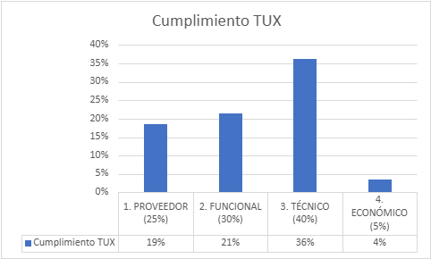
Debido a que ambos tienen particularidades muy similares y ambos pueden contemplar lo mismo con fórmulas, gráficos y tablas dinámicas para generar el primer acercamiento a tablero BI, no vemos grandes distinciones entre ambos aplicativos que no se pueda mejorar con incorporar aplicativos externos en un proyecto siguiente para compensarlos.
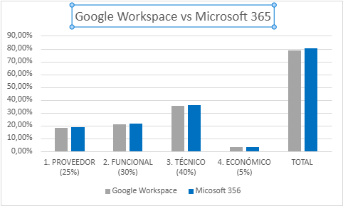
Análisis comparativo
Google Workspace | Microsoft 365 | |||
|---|---|---|---|---|
Spek | Lineout | Innovate Consultores | TUX soluciones | |
ASPECTO | Cumplimiento Spek | Cumplimiento Lineout | Cumplimiento Innovate | Cumplimiento TUX |
1. PROVEEDOR (25%) | 19% | 18% | 19% | 19% |
1.1. Trayectoria y Experiencia (35%) | 28% | 25% | 29% | 26% |
1.2. Capacidad de Soporte y Transferencia (65%) | 49% | 46% | 49% | 49% |
2. FUNCIONAL (30%) | 21% | 21% | 21% | 21% |
2.1. Gestión Comercial y Omnicanalidad (45%) | 25% | 24% | 25% | 25% |
2.2. Gestión Operativa y Documental (55%) | 47% | 47% | 47% | 47% |
3. TÉCNICO (40%) | 36% | 35% | 36% | 36% |
3.1. Arquitectura y Compatibilidad (55%) | 52% | 52% | 52% | 52% |
3.2. Seguridad y Gestión de Riesgos (45%) | 38% | 35% | 38% | 38% |
4. ECONÓMICO (5%) | 4% | 3% | 4% | 4% |
4.1. Costos de Suscripción y Operación (55%) | 37% | 37% | 37% | 37% |
4.2. Costos de Implementación y Salida (45%) | 34% | 29% | 34% | 34% |
TOTAL | 80% | 77% | 81% | 80% |
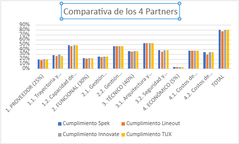
ASPECTO | Google Workspace | Micosoft 356 |
|---|---|---|
1. PROVEEDOR (25%) | 18,46% | 19,02% |
1.1. Trayectoria y Experiencia (35%) | 26,47% | 27,34% |
1.2. Capacidad de Soporte y Transferencia (65%) | 47,37% | 48,75% |
2. FUNCIONAL (30%) | 21,28% | 21,45% |
2.1. Gestión Comercial y Omnicanalidad (45%) | 24,19% | 24,75% |
2.2. Gestión Operativa y Documental (55%) | 46,75% | 46,75% |
3. TÉCNICO (40%) | 35,64% | 36,20% |
3.1. Arquitectura y Compatibilidad (55%) | 52,25% | 52,25% |
3.2. Seguridad y Gestión de Riesgos (45%) | 36,84% | 38,25% |
4. ECONÓMICO (5%) | 3,42% | 3,54% |
4.1. Costos de Suscripción y Operación (55%) | 37,13% | 37,13% |
4.2. Costos de Implementación y Salida (45%) | 31,22% | 33,75% |
TOTAL | 78,80% | 80,22% |
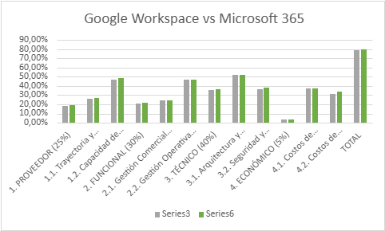
Para verlo visualmente como serían solamente los cumplimientos de las herramientas en los cuatro aspectos
ASPECTO | Google Workspace | Micosoft 356 |
|---|---|---|
1. PROVEEDOR (25%) | 18,46% | 19,02% |
2. FUNCIONAL (30%) | 21,28% | 21,45% |
3. TÉCNICO (40%) | 35,64% | 36,20% |
4. ECONÓMICO (5%) | 3,42% | 3,54% |
TOTAL | 78,80% | 80,22% |
Cashflow comparativo
En lo que respecta el Cashflow, los costos siguientes no serán considerados dentro de su armado::
- Instalación son nulos ya que solamente necesitan conexión a internet y son aptos para laptops y celulares.
- Proveedor de internet (ISP), costo hundido. Se recomienda buscar un contrato empresarial con SLA detallado en lugar del hogareño que actualmente poseen; y evitar Wi-Fi públicas o sin contraseñas.
- Antivirus y VPN: son recomendaciones a que puedan incorporarlo para darle mayor robustez al acceso de la solución. Estos precios no se incluyen.
- Mantenimiento técnico preventivo y/o reactivo: no corresponde, por ahora, incluirlos ya que el sistema que utilizan es BYOD. En caso que una nueva política organizacional requiera la adquisición de máquinas propias, estos conceptos deberán estar calculados y cotizados.
- Costos de reparación de equipos: al ser BYOD, estos costos corren por cuenta del empleado, por lo tanto, no serán calculados en este momento.
- Servidor (sea on-premise o cloud): en lo que hace al proyecto global, no existe un costo asociado. En caso de crecimiento organizacional o que el storage de la carpeta compartida en la nube supere la capacidad ofrecida, se deberá realizar una nueva consultoría por expansión de personal y/o de capacidad. Allí se evaluaría la necesidad de migración a un servidor propio o con host en cloud.
Para los futuros pasos con crecimiento organizacional: se recomienda la incorporación de aplicativos Open Source, el análisis de los mismos no corresponde a la presente solución tecnológica.
Tampoco se han tenido en cuenta ajustes por inflación
Gráficos
En este primer gráfico, vemos la diferencia entre los dos proveedores
Plataforma y Plan | Precio USD / Usuario / Mes (Pago Anual) | Almacenamiento Cloud | Correo Corporativo | Herramientas Principales | Modalidad / Notas |
|---|---|---|---|---|---|
Google Workspace - Business Starter | $7,00 | 30 GB por usuario | Sí (Gmail personalizado) | Gmail, Drive, Meet, Docs, Sheets, Slides, Forms | Compromiso anual (facturación mensual) |
Google Workspace - Business Standard | $14,00 | 2 TB por usuario (compartido) | Sí (Gmail personalizado) | Starter + Grabación de llamadas en Meet, Drive compartido | Compromiso anual (facturación mensual) |
Microsoft 365 - Empresa Básico | $7,00 | 1 TB por usuario (OneDrive) | Sí (Exchange 50 GB) | Word, Excel, PowerPoint (Web/Móvil), Teams | Suscripción anual (renovación automática) |
Microsoft 365 - Empresa Estándar y Copilot para empresas | $23,50 | 1 TB por usuario (OneDrive) | Sí (Exchange 50 GB) | Básico + Apps de escritorio (Word, Excel, etc.) + Copilot IA integrado | Suscripción anual (precio oficial portal Argentina) |
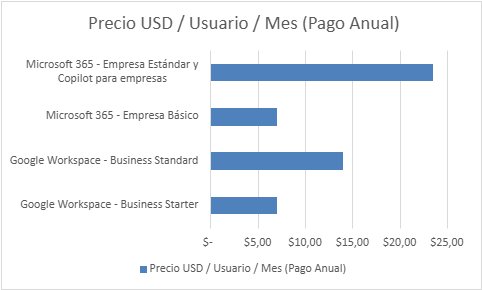
En lo que respecta las 4 opciones se hará un flujo en donde solamente adquieren 1 usuario que será el administrador de todas las cuentas individuales gratuitas.
Nótese que el precio de la opción Google Workspace - Business Starter y Microsoft 365 - Empresa Básico son el mismo por lo cual se ve una sola línea coloreada, la otra línea está en su misma posición.
Plataforma y Plan | Precio USD / Usuario / Mes (Pago Anual) | Año 1 | Año 2 | Año 3 | Total |
|---|---|---|---|---|---|
Google Workspace - Business Starter | $7,00 | $84,00 | $84,00 | $84,00 | $252,00 |
Google Workspace - Business Standard | $14,00 | $168,00 | $168,00 | $168,00 | $504,00 |
Microsoft 365 - Empresa Básico | $7,00 | $84,00 | $84,00 | $84,00 | $252,00 |
Microsoft 365 - Empresa Estándar y Copilot para empresas | $23,50 | $282,00 | $282,00 | $282,00 | $846,00 |
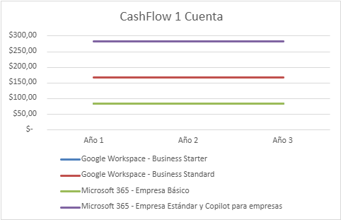
El incremental sería:
Plataforma y Plan | Precio USD / Usuario / Mes (Pago Anual) | Año 1 | Año 2 | Año 3 |
|---|---|---|---|---|
Google Workspace - Business Starter | $7,00 | $84,00 | $168,00 | $252,00 |
Google Workspace - Business Standard | $14,00 | $168,00 | $336,00 | $504,00 |
Microsoft 365 - Empresa Básico | $7,00 | $84,00 | $168,00 | $252,00 |
Microsoft 365 - Empresa Estándar y Copilot para empresas | $23,50 | $282,00 | $564,00 | $846,00 |
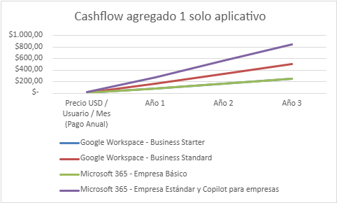
Con los 9 usuarios (tiene en cuenta a la diseñadora de salta y a la cuenta administradora)
Plataforma y Plan | Precio USD / Usuario / Mes (Pago Anual) | Año 1 | Año 2 | Año 3 | Total |
|---|---|---|---|---|---|
Google Workspace - Business Starter | $63,00 | $756,00 | $756,00 | $756,00 | $2.268,00 |
Google Workspace - Business Standard | $126,00 | $1.512,00 | $1.512,00 | $1.512,00 | $4.536,00 |
Microsoft 365 - Empresa Básico | $63,00 | $756,00 | $756,00 | $756,00 | $2.268,00 |
Microsoft 365 - Empresa Estándar y Copilot para empresas | $211,50 | $2.538,00 | $2.538,00 | $2.538,00 | $7.614,00 |
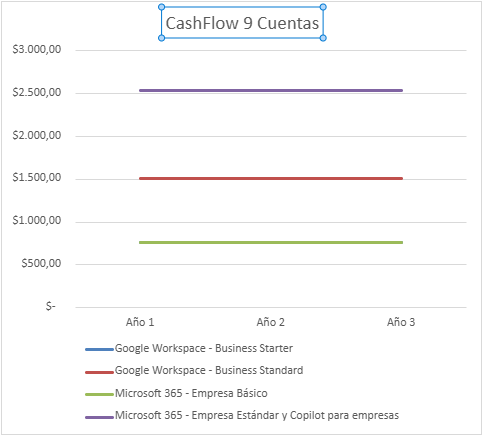
Plataforma y Plan | Precio USD / Usuario / Mes (Pago Anual) | Año 1 | Año 2 | Año 3 |
|---|---|---|---|---|
Google Workspace - Business Starter | $63,00 | $756,00 | $1.512,00 | $2.268,00 |
Google Workspace - Business Standard | $126,00 | $1.512,00 | $3.024,00 | $4.536,00 |
Microsoft 365 - Empresa Básico | $63,00 | $756,00 | $1.512,00 | $2.268,00 |
Microsoft 365 - Empresa Estándar y Copilot para empresas | $211,50 | $2.538,00 | $5.076,00 | $7.614,00 |
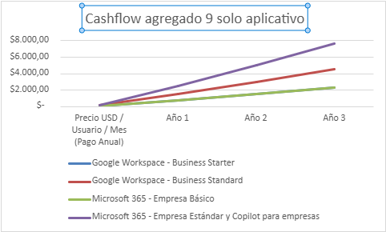
Ahora tenemos dos supuestos de crecimiento:
1°) se poseen las 9 cuentas en el año 1, y se agregan 5 cuentas en el año 2 y otras 5 en el año 3, con un total de 19 cuentas al final del año 3.
Plataforma y Plan | Precio USD / Usuario / Mes (Pago Anual) | Año 1 | Año 2 | Año 3 | Total |
|---|---|---|---|---|---|
Google Workspace - Business Starter | $7,00 | $756,00 | $1.176,00 | $1.596,00 | $3.528,00 |
Google Workspace - Business Standard | $14,00 | $1.512,00 | $2.352,00 | $3.192,00 | $7.056,00 |
Microsoft 365 - Empresa Básico | $7,00 | $756,00 | $1.176,00 | $1.596,00 | $3.528,00 |
Microsoft 365 - Empresa Estándar y Copilot para empresas | $23,50 | $2.538,00 | $3.948,00 | $5.358,00 | $11.844,00 |
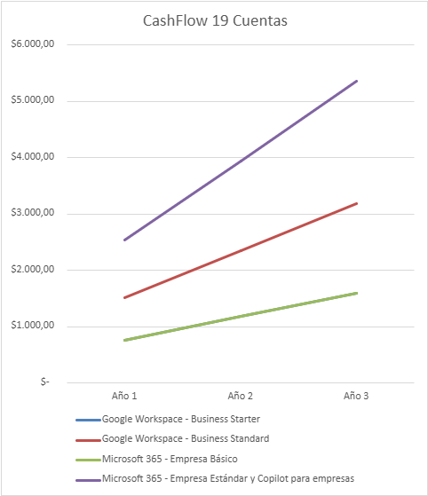
Plataforma y Plan | Precio USD / Usuario / Mes (Pago Anual) | Año 1 | Año 2 | Año 3 |
|---|---|---|---|---|
Google Workspace - Business Starter | $7,00 | $756,00 | $1.932,00 | $3.528,00 |
Google Workspace - Business Standard | $14,00 | $1.512,00 | $3.864,00 | $7.056,00 |
Microsoft 365 - Empresa Básico | $7,00 | $756,00 | $1.932,00 | $3.528,00 |
Microsoft 365 - Empresa Estándar y Copilot para empresas | $23,50 | $2.538,00 | $6.486,00 | $11.844,00 |

2°) se poseen las 9 cuentas iniciales en el año 1, se agregan 10 en el año 2 y 10 en el año 3, con un total de 29 cuentas al final del 3er año.
Plataforma y Plan | Precio USD / Usuario / Mes (Pago Anual) | Año 1 | Año 2 | Año 3 | Total |
|---|---|---|---|---|---|
Google Workspace - Business Starter | $7,00 | $756,00 | $1.596,00 | $2.436,00 | $4.788,00 |
Google Workspace - Business Standard | $14,00 | $1.512,00 | $3.192,00 | $4.872,00 | $9.576,00 |
Microsoft 365 - Empresa Básico | $7,00 | $756,00 | $1.596,00 | $2.436,00 | $4.788,00 |
Microsoft 365 - Empresa Estándar y Copilot para empresas | $23,50 | $2.538,00 | $5.358,00 | $8.178,00 | $16.074,00 |
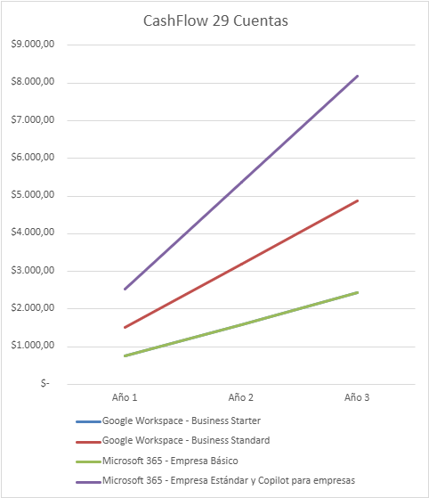
Plataforma y Plan | Precio USD / Usuario / Mes (Pago Anual) | Año 1 | Año 2 | Año 3 |
|---|---|---|---|---|
Google Workspace - Business Starter | $7,00 | $756,00 | $2.352,00 | $4.788,00 |
Google Workspace - Business Standard | $14,00 | $1.512,00 | $4.704,00 | $9.576,00 |
Microsoft 365 - Empresa Básico | $7,00 | $756,00 | $2.352,00 | $4.788,00 |
Microsoft 365 - Empresa Estándar y Copilot para empresas | $23,50 | $2.538,00 | $7.896,00 | $16.074,00 |
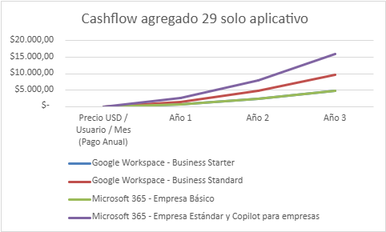
Costo inicial (puesta en marcha)
Conformación de equipos de trabajo y/o consultoría
Nuestro equipo de consultoría les entregará el trabajo de proyecto a realizar, no creemos que sea necesario una contratación a alguna Big Four (ej, PWC, EY, etc) ya que suelen cobrar más por la cantidad de involucrados que existe en el proceso. En este caso, con las recomendaciones y teniendo al sponsor que está por recibirse de Lic. en Sistemas, creemos que no es necesaria una erogación de fondos para una consultoría de esa envergadura, pero sí podría consultar a un Lic en Administración para todo lo relacionado al negocio. Dependiendo de la cantidad de horas que pueda insumirle es el cobro del servicio. Este trabajo no debería ser permanente, sino temporal.
Software
Licenciamiento y suscripción
En el caso de este trabajo, los licenciamientos serán en base a estos montos (montos válidos al momento de la realización de este documento 31/10/2026). Dichos precios pueden fluctuar en un futuro.
Plataforma y Plan | Precio USD / Usuario / Mes (Pago Anual) |
|---|---|
Google Workspace - Business Starter | $7,00 (se utilizará esta opción como inicial) |
Google Workspace - Business Standard | $14,00 |
Microsoft 365 - Empresa Básico | $7,00 (se utilizará esta opción como inicial) |
Microsoft 365 - Empresa Estándar y Copilot para empresas | $23,50 |
En nuestra evaluación de cashflow dejamos los cuatro precios, nuestra recomendación es que tengan 1 cuenta admin gratuita de Google Workspace para que sea la que brinde la primera barrera de permisos tanto carpetas como archivos (dentro de los mismos se pueden bloquear ciertas acciones para el analista que carga información) y que esto no caiga en alguien físico, luego agregarle la suscripción (de USD 7) para mejorar el alcance de lo gratuito, y si quieren actualizar su alcance y capacidad, el siguiente nivel es más económico que la competencia (14 vs 23,50). Esta propuesta de solución es para poder hacerle foco a otro aplicativo y utilizar opciones gratuitas y que logren migrar las planillas alojadas en computadoras propias a la nube.
Implementación e instalación
Esta solución no posee costos de instalación ni implementación.
Customización e Integración
Esta solución no posee costos de customización e integración.
Migración de datos
Cuando se implementa un nuevo sistema o nuevo módulo, habitualmente se requiere migrar la información del sistema actual. El costo de la migración estará asociado al volumen y al soporte de dichos datos, y puede que primeramente sea necesario convertir el formato de los datos, consolidarlos con otras fuentes, depurar, eliminar duplicidad, obsolescencia y errores de carga. Cuantificar el volumen de datos a migrar y los requisitos técnicos para poder llevarlo a cabo. Si el proveedor lo incluye, especifique su costo.
Esta solución no posee costos de migración de datos.
Hardware
La implementación de una solución on-premise seguramente requerirá adquirir nuevo hardware o actualizar el corriente para funcionar correctamente. Esto puede incluir servidores de aplicación y base de datos, terminales de usuario, infraestructura de redes, etc., algunos de los cuales también serán necesarios para una solución de tipo SaaS. Para cualquier caso, si no se cuenta con PCs modernas con navegadores web actualizados, posiblemente sea necesario comprar equipos. Además se puede requerir la compra de algún equipo adicional, por ejemplo, para realizar respaldos de la información.
Esta solución no posee costos de nuevo o actualización de hardware.
Seguridad del Negocio y de la Información
La transformación digital, Big Data y otras tendencias generan un volumen cada vez más importante de información que debe protegerse de ataques externos. Actualmente las empresas pueden sufrir importantes inconvenientes descuidando la seguridad de la información, cuyos objetivos centrales consisten en garantizar la confidencialidad, integridad y disponibilidad. Dependiendo de la gravedad puede impactar incluso en la continuidad del negocio.
Esta solución no posee costos que impliquen seguridad de negocio y de la información.
Se hace una recomendación de futura adquisición de Antivirus y de VPN.
Otros costos iniciales
En esta sección se pueden incluir otros costos que se deban considerar.
Esta solución no posee costos otros costos iniciales.
Costos recurrentes
Mantenimiento y soporte
Esta solución no posee costos de mantenimiento y soporte que sean directos. Ya están incluidos en el aplicativo.
Actualización de hardware
En la medida que la solución lo necesite, posiblemente se requiera mayor capacidad de hardware que aquella con la que se cuenta.
Esta solución no posee costos de actualización de hardware.
Capacitación
Esta solución podría poseer costos de capacitación, pero lo tomamos como hundido. Se deberá planificar 2 horas por día para acostumbrarse al cambio del aplicativo. Tanto Google sheets como Microsoft Excel, son muy parecidos en cuanto a fórmulas y diseños, con una leve diferencia en los menúes y botones de acceso. Para lo que lo utiliza la organización actualmente, dado que las planillas carecen de fórmulas, creemos que la opción de Google es más beneficiosa.
Certificaciones
En este apartado deben incluirse el costo recurrente de certificación de normas (por ejemplo, el costo anual de recertificar normas ISO) como el costo anual de exámenes, reválida o cualquier arancel que con motivo de actualización de conocimientos deba incurrir los recursos de la organización
Esta solución no posee costos de certificación asociados. Los empleados pueden realizar cursos online gratuitos sobre el aplicativo para poder aprovecharlo al máximo, contando también con mucho material en plataformas como YouTube.
Otros costos recurrentes
En esta sección se pueden incluir otros costos que se deban considerar. Por ejemplo, la contratación de personal de TI para el mantenimiento del sistema, consultoría por reingeniería de procesos, cambios en el contrato con el ISP para garantizar mejor conectividad, equipos e insumos para almacenamiento y respaldo, redundancia en la conexión y/u otra infraestructura.
Los costos recurrentes son el ISP hogareño (del cual no tenemos información) y del aplicativo KOMMO CRM que ya lo están pagando con una mensualidad de USD 50.
Costo total del propiedad / costo total del servicio
Para el cálculo del CTP/CTS, a los ítems identificados en la sección anterior agregue y grafique la proyección a 3 años
TABLA RESUMEN - Producto básico/starter
Ítem | Proveedor 1 Google Worspace | Proveedor 2 Microsoft 365 | ||||
|---|---|---|---|---|---|---|
COSTO INICIAL/ PUESTA EN MARCHA | ||||||
| No posee | No posee | ||||
| 7 USD mensual / 84 USD anual | 7 USD / 84 USD anual | ||||
| No posee | No posee | ||||
| No posee | No posee | ||||
| No posee | No posee | ||||
Subtotal | ||||||
COSTO RECURRENTE (1er año) | ||||||
| No posee | No posee | ||||
| No posee | No posee | ||||
| No posee | No posee | ||||
| No posee | No posee | ||||
| 50 USD mensual / 600 USD anual | 50 USD mensual / 600 USD anual | ||||
Subtotal | ||||||
COSTO TOTAL DE PROPIEDAD | Subtotal | Acumulado | Subtotal | Acumulado | ||
1er año | 684 USD | 684 USD | 684 USD | 684 USD | ||
2do año | 684 USD | 1.368 USD | 684 USD | 1.368 USD | ||
3er año | 684 USD | CTPCTS 3 años | 2.052 USD | 684 USD | CTP/CTS 3 años | 2.052 USD |

TABLA RESUMEN - Producto Estándar
Ítem | Proveedor 1 Google Worspace | Proveedor 2 Microsoft 365 | ||||
|---|---|---|---|---|---|---|
COSTO INICIAL/ PUESTA EN MARCHA | ||||||
| No posee | No posee | ||||
| 14 USD mensual / 168 USD anual | 23,50 USD / 282 USD anual | ||||
| No posee | No posee | ||||
| No posee | No posee | ||||
| No posee | No posee | ||||
Subtotal | ||||||
COSTO RECURRENTE (1er año) | ||||||
| No posee | No posee | ||||
| No posee | No posee | ||||
| No posee | No posee | ||||
| No posee | No posee | ||||
| 50 USD mensual / 600 USD anual | 50 USD mensual / 600 USD anual | ||||
Subtotal | ||||||
COSTO TOTAL DE PROPIEDAD | Subtotal | Acumulado | Subtotal | Acumulado | ||
1er año | 768 USD | 768 USD | 882 USD | 882 USD | ||
2do año | 768 USD | 1.536 USD | 882 USD | 1.764 USD | ||
3er año | 768 USD | CTPCTS 3 años | 2.304 USD | 882 USD | CTP/CTS 3 años | 2.646 USD |
Plataforma y Plan | Precio USD / Usuario / Mes (Pago Anual) | Año 1 | Año 2 | Año 3 |
|---|---|---|---|---|
Google Workspace - Business Standard + KOMMO CRM | $64,00 | $768,00 | $1.536,00 | $2.304,00 |
Microsoft 365 - Empresa Estándar y Copilot + KOMMO CRM | $73,50 | $882,00 | $1.764,00 | $2.646,00 |
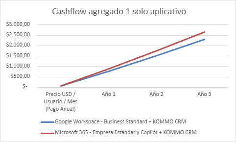
Retorno de inversión
En esta sección enunciarán cuales son los principales puntos o indicadores que se deben contemplar para establecer los factores de éxito del proyecto ya que por limitaciones de tiempo no es posible establecer una cuantificación de beneficios real del mismo. Entonces, a los fines de completar la evaluación, solo se enunciarán y describirán las distintas categorías y conceptos que se deberán analizar a futuro para tener un ROI determinado.
La fórmula genérica del ROI es:
((Ingresos - Inversión)/Inversión)x100.
Anexos
Adjunte las propuestas de los proveedores en las que se basó el presente análisis.